错的是运动方式：内爆与爆炸
舒伯格一生批判的核心，不是某一项技术，而是现代技术所依赖的运动方向。他留下最著名的一句话只有四个词："Ihr bewegt falsch"——你们的运动方式是错的。
2.1两种运动形式
把自然界看成一个系统，任何物质运动都可以归入两类：一类向外、向边缘；一类向内、向中心。舒伯格的判断是：现代技术几乎完全依赖前一类，而自然界的建造过程几乎完全依赖后一类。
| 维度 | 传统技术（离心 / 分解） | 自然技术（向心 / 构建） |
|---|---|---|
| 核心机制 | 爆炸 · 加热 · 压力 · 离心力 | 内爆 · 冷却 · 吸力 · 向心力 |
| 运动轨迹 | 直线的、半径向外的运动 | 螺旋、涡旋、摆线空间曲线 |
| 速度分布 | 边缘比中心快 | 中心比边缘快 |
| 阻力规律 | 运动阻力随加速度平方上升 | 在特定流速下摩擦趋近于零 |
| 在自然中的作用 | 溶解、分解已耗尽的复合体 | 创造、发展、精炼与建设 |
| 长期后果 | 短期数量增长（假繁荣），品质恶化 | 品质提升，能量自持 |
他的表述极为凝练："向心摆线螺旋运动对应于温度下降、压缩与浓缩；离心运动对应于温度上升、热量、膨胀与爆炸。" 在自然界中这两种运动持续相互作用，但建设性的运动必须占主导，系统才能发育。
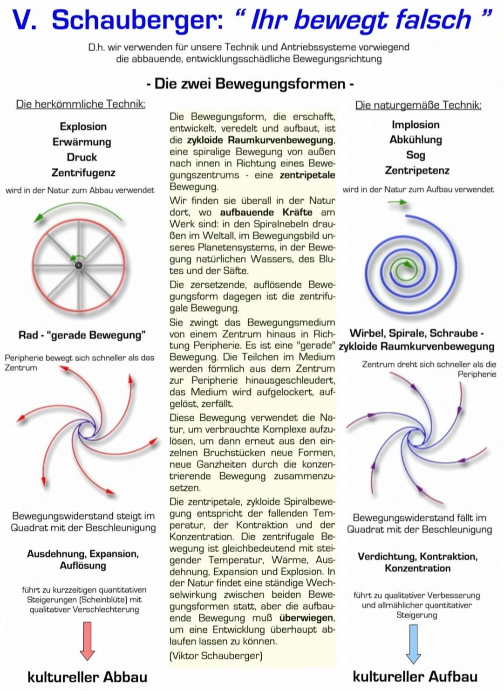

2.2效率：为什么爆炸是"死亡技术"
舒伯格对热机的批判建立在一个简单的算术上：大多数内燃机的效率不到 50%——释放的能量有一半以上以热量的形式被浪费掉。他因此把汽车戏称为"地形加热器"。这不只是能源浪费的问题，更是运动方向的问题：热、压力、爆炸都是分解性的，而水与空气恰恰是形成生命所必需的介质。
他的反例同样朴素："植物中没有任何东西会爆炸。" 大自然以最小的能量消耗达到最大的生产力，而现代技术像是一个农民，春天把七个土豆扔进地里，秋天挖出一个。
2.3温度：+4℃ 与"负温度变化"
水的密度在约 +4℃ 时最大——这是水最"重"、最"结实"的温度点，也是舒伯格全部水理论的核心常数。他把水温向 +4℃ 靠近的过程称为"温度负变化"，此时如果同时施加摆线螺旋运动（涡旋），水的能量会上升，水变得新鲜而有生命：由于"乳液"的形成，氧气被氢溶解，从而产生"新"水。
这个观点在 1952 年斯图加特的技术学院实验中得到了初步检验：实验清楚表明，适当旋转的水能够补偿摩擦力。这一数据后来在 1981 年由斯德哥尔摩皇家理工学院再次确认。
2.4自然界唯一的成功案例：龙卷风
舒伯格反复以龙卷风为原型——它是自然界中内爆式结构唯一的"实物样本"。其结构可以这样描述：中心有一股强大的向下水流（如同浴缸里的漏斗），这股内爆喷流撞到地面后受能量反冲，转而向上卷曲，形成上升的绳状气流，而我们在地面观察到的"薄壁圆柱"其实就是边界层。
在他的解读里，龙卷风还同时是一个静电发生器：旋转中心为负、外围为正。当达到击穿电压时发生雷电放电，进一步扭曲"滚轮"。外围"正"与中心"负"之间的相互电吸引，很可能是龙卷风"鼻子"稳定的主要原因。
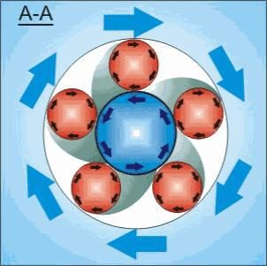
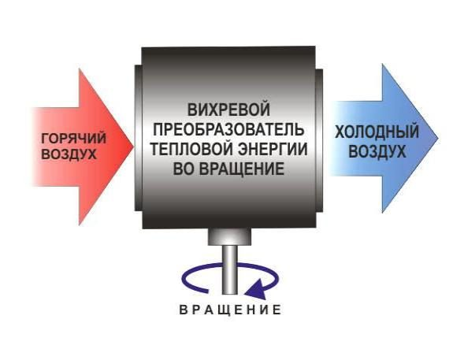
2.5水的物理事实：一张图里的四个数字
2.3 把 +4℃ 说成"核心常数"，但听众此刻很容易把它当成一句口号。下面这张图把它落到数据上——这是《生命的能量》（Living Energies 中译本）里的图 8.1，编者把水的全部关键物理量画进了同一副坐标系，原图标题就叫《Water – some important physical facts》。
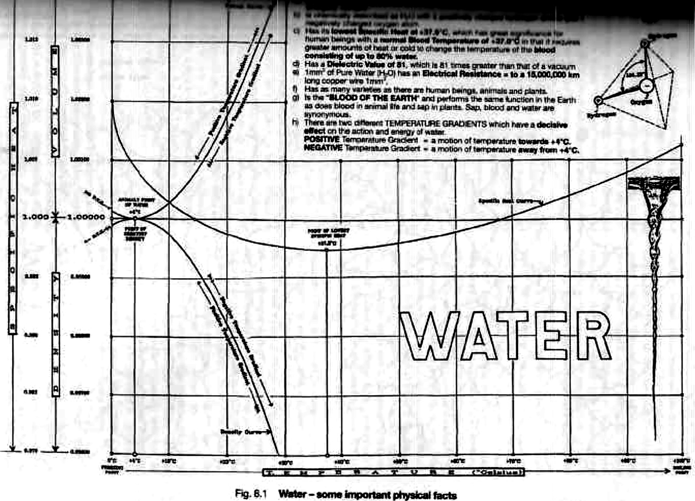
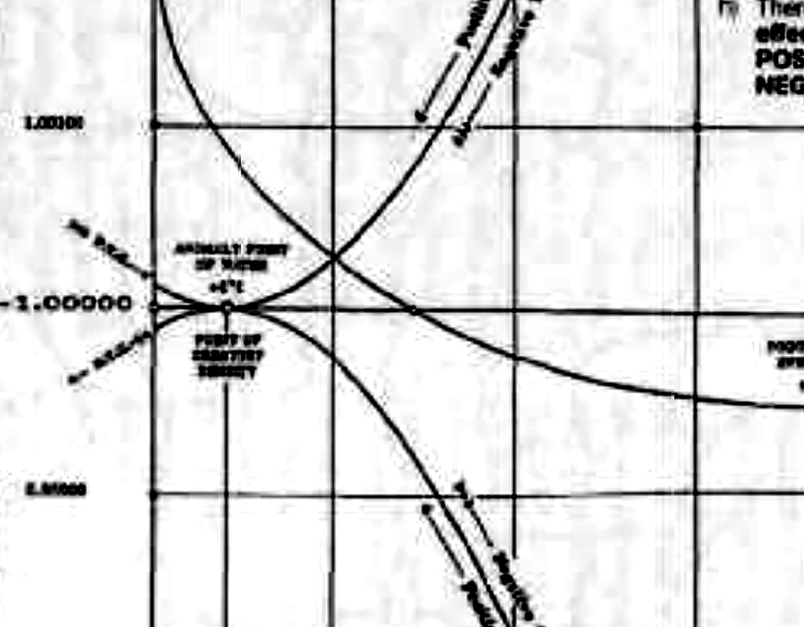
① 4℃ 是临界值。水的异常点：在 4℃ 时水的密度最大。这张图把它画成了一次交叉——体积曲线在 4℃ 取最小值，密度曲线在 4℃ 取最大值。两者互为倒数（ρ × V = 常数），所以必然在"各自都等于 1.000"的那一点相遇。那一点就是 4℃。
在这个点附近，水的体积与温度之间的关系变得特殊：从 0℃ 升到 4℃，水还在收缩；越过 4℃ 继续升温，水才转为膨胀。原书记录 4℃ 时水的密度为 0.99996 g/cm³，空间体积最小、几乎不可压缩——这个温度也是液态水密度最高、能量含量最高的点。
② 正温度梯度与负温度梯度。原图把这两个方向画成跨过交点的两支箭头，图注 h) 给出了严格定义：
| 方向 | 定义 | 水同时发生什么 |
|---|---|---|
| 正温度梯度 Positive | 温度趋向 +4℃（含从冰点以下升上来） | 密度、动力、势与能量含量同时增加，在 +4℃ 达到极大 |
| 负温度梯度 Negative | 温度离开 +4℃（向上或向下都算） | 密度与能量同时下降 |
原书强调：这两种梯度在自然界同时存在，但"为了进化而不是瓦解，必须以正温度梯度为主"。这句话正是舒伯格工程观的落点——他所有的引水结构、河道整治、森林经营，本质上都在干同一件事：让水沿着正温度梯度走。
③ 比热容曲线：最低点在 +37.5℃。图中间那条浅 U 形曲线显示水的比热随温度变化。比热容是物质吸收热量使自身温度升高的能力；曲线的最低点意味着水在这个温度附近最容易被改变温度，而离开这个点（无论变冷还是变热）都需要抽出或加入更多的热，才能改变同样的温度。
原书把这个数字与人血温度并置：正常血液温度 +37.0℃，而血液含水可达 90%。两者只差 0.5℃，也就是说体温正好落在"最抗热扰动"的位置上——这是水作为生命调节器最直接的一处证据。放到行星尺度上，水是液体中比热最大者（=1 cal/g·K）、也是导热最好的液体之一，这正是水能调节地球温度的原因之一。
④ 介电常数 81：水是"电荷分离器"。原图注 d) 写：水有 Dielectric Value of 81——介电值是真空的 81 倍。介电常数衡量的是物质被电流或电荷"穿透"的程度；数值越高的介质，越能在两侧积蓄起相反的电荷。所以这句话的工程含义是：水作为电荷分离层的效率是真空的 81 倍。
紧接着的图注 e) 给出另一侧的数字：1 mm³ 的纯水，其电阻等于 15,000,000 km 长的 1 mm² 铜线——它对电荷的转移有巨大的固有阻力。"分离效率高"和"导通阻力大"看似矛盾，实际正是水成为理想电介质的原因：它能把电荷分开并留住，却几乎不让它们通过。下一节（2.6）要讲的水滴生电，根子就在这个数字上。
⑤ 冰点、沸点，与"异常膨胀"。横轴左端 0℃ 标 FREEZING POINT、右端 +100℃ 标 BOILING POINT，这是水作为地表唯一三态共存物质的天然标尺。而 4℃ 以下的反常行为，原书给了具体比例：水结成冰时体积按 0.9168 : 0.99984 ≈ 1 : 1.09058 增加，相当于排开原体积的 1/11——这就是冰会浮起来的原因。
这条异常不是趣闻，它是湖泊能在严冬保住生命的机制：正因为冰比水轻，结冰只能发生在表面，冰层变成一层漂浮的保温罩；而最重的 4℃ 水沉在湖底并稳定在那里，水生生物才得以越冬。"冬天湖面结冰、湖底不结冰"这句话的全部物理，就在图 2-6 的这一个交点上。
⑥ 右上角那幅小图。图 8.1 右上角画的是一个水分子：两个带正电的氢、一个带双负电的氧；把四个电荷连起来是一个四面体，H–O–H 夹角标着 104.35°。原文写得很明白——"由于原子核周围电荷的分布，两个氢原子之间的夹角为 104.35°，如图 8.1 右上角插图所示。"
这个角度是一切的起点：它不是标准四面体的 109.5°，两个氢被氧的孤对电子挤开了约 5°。正是这 5° 让水分子有了净偶极矩，才有介电 81、才使水成为万能溶剂、才能在下落与旋涡中分离电荷。请记住 104.35°——第四章讲蛋形水机的分子笼（H₄O）时，用的还是同一个数。
原图左上方是这张图的图注清单，回答的是"水到底是什么"。全文照录，因为它是本节最紧凑的总结：
| 条目 | 原图原文（附译文） |
|---|---|
| a) | （扫描件此行在顶端被裁切，仅存半行，未作转写） |
| b) | Is chemically described as H₂O with 2 positively charged hydrogen atoms and 1 negatively charged oxygen atom —— 化学上被描述为 H₂O：两个带正电的氢原子，一个带负电的氧原子 |
| c) | Has its lowest Specific Heat at +37.5℃… —— 比热最低点在 +37.5℃；这对体温 +37.0℃、血液含水可达 90% 的人体意义重大——要改变血液温度，需要更多热量或冷量 |
| d) | Has a Dielectric Value of 81, which is 81 times greater than that of a vacuum —— 介电值 81，是真空的 81 倍 |
| e) | 1mm³ of Pure Water (H₂O) has an Electrical Resistance = to a 15,000,000 km long copper wire 1mm² —— 1 mm³ 纯水的电阻，等于 15,000,000 km 长的 1 mm² 铜线 |
| f) | Has as many varieties as there are human beings, animals and plants —— 水的品种之多，如同人与动植物的多样 |
| g) | Is the "BLOOD OF THE EARTH" and performs the same function in the Earth as does blood in animal life and sap in plants. Sap, blood and water are synonymous —— 是"地球的血液"，在地球中的作用如同血液之于动物、树液之于植物；树液、血液与水是同义词 |
| h) | There are two different TEMPERATURE GRADIENTS… —— 有两种温度梯度，对水的作用与能量有决定性影响：正 = 温度趋向 +4℃；负 = 温度离开 +4℃ |
2.6水滴生电：从开尔文到 2006 年的一串实验
上一节最后一个数字——介电常数 81——指向一个很少被提起的事实：水在下落、被撕裂、再结合的过程中会分离电荷。这不是比喻，是十九世纪就做出来的实验。本节材料来自德国内爆研究协会（Verein für Implosionsforschung e.V.）2006 年 8 月基础研讨会的讲义《Der Wasserfadenversuch》（水丝实验，《Implosion》第 131 期）。
原理四步：
- ① 水滴拉断时电荷被分开。水从细孔成丝下落，在水柱被拉断成水滴的瞬间发生电荷分离——负电荷随水雾逸散到空气中，正电荷留在水里（这是 Lenard 1892 年在阿尔卑斯山瀑布上实测得到的结论，即后世的"瀑布效应"）。
- ② 已有电场会把分离"放大"。如果水滴落下时穿过一个带电的环，环的电场会预先在液面感应出相反电荷，使拉断瞬间的分离更彻底。
- ③ 交叉接线 = 正反馈。把 A 罐的电荷送到 A′ 上方的环、把 A′ 罐的电荷送到 A 上方的环。于是任何一点初始的偶然带电都会被不断放大，电位逐级升高（德文原词 Kaskadierung，"级联"）。
- ④ 到击穿电压，打火。电位高到击穿空气时，两罐之间就出现电火花——一台不靠电池、只靠水下落运转的高压静电电源。
这套原理看起来只是一件物理玩具，但德文讲义把它一百多年间的实验数据完整留了下来。注意时间顺序：这是一条独立的研究线，不是一个人的发现。
| 年份 / 实验者 | 装置与做法 | 记录到的结果 |
|---|---|---|
| 1885 Elster & Geitel |
论文标题《Notiz über einen empfindlichen Duplikator》（关于一种灵敏倍增器的说明）。两根水柱各穿过一个小杯 R / R′，用丹尼尔电池提供预偏压（Vorspannung durch galvanisches Element），并把多级级联起来升压（Kaskadierung zwecks Spannungssteigerung）。 | 把它做成了可用的静电倍增器。两位作者自己指出：这与 Thomson（开尔文）的水感应起电机"高度相似"。 |
| 1889 George Fuller |
把"滴水段"多级串联（Tropfenstrecken in Wasserstrahl-Influenzapparat）。喷头带 18 个 0.24 mm 喷嘴；阴极环 70 mm；收集容器 220 mm；水压 0.7 bar。 | 段 I–IV 之间出现最长 12 mm 的放电火花，段 II–III 之间最长 40 mm。并给出对照参数：空气的绝缘能力约 1 kV/mm（12 mm 与 40 mm 的火花，对应量级即十几到四十 kV）。 |
| 1892 Philipp Lenard |
在奥地利阿尔卑斯山的瀑布上做大规模实测。工具极简：一盏燃烧的煤油灯当作火焰集电极（Flammenkollektor），加一台 Exner 验电器。 | ① 蒸馏水给出的电位比自来水高 40 倍；② 负电荷逸散到空气中、正电荷留在水里；③ 把装置密封起来就阻止了电荷分离（说明空气是必要的"受体"）；④ 水滴打在金属板上比深插入水面产生更多电荷。 |
| 2006 Jugend forscht Münster 和平学校 |
学生竞赛项目，做成了闭环：加循环泵，水可反复使用。 | 充电到 6–20 kV；驱动一台 1 mW 的静电马达；在氖管中放电，频率最高 35 Hz；软水更有利；水温从 17℃ 降到 3℃。 |
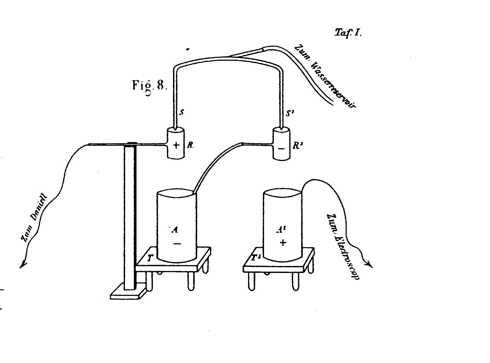
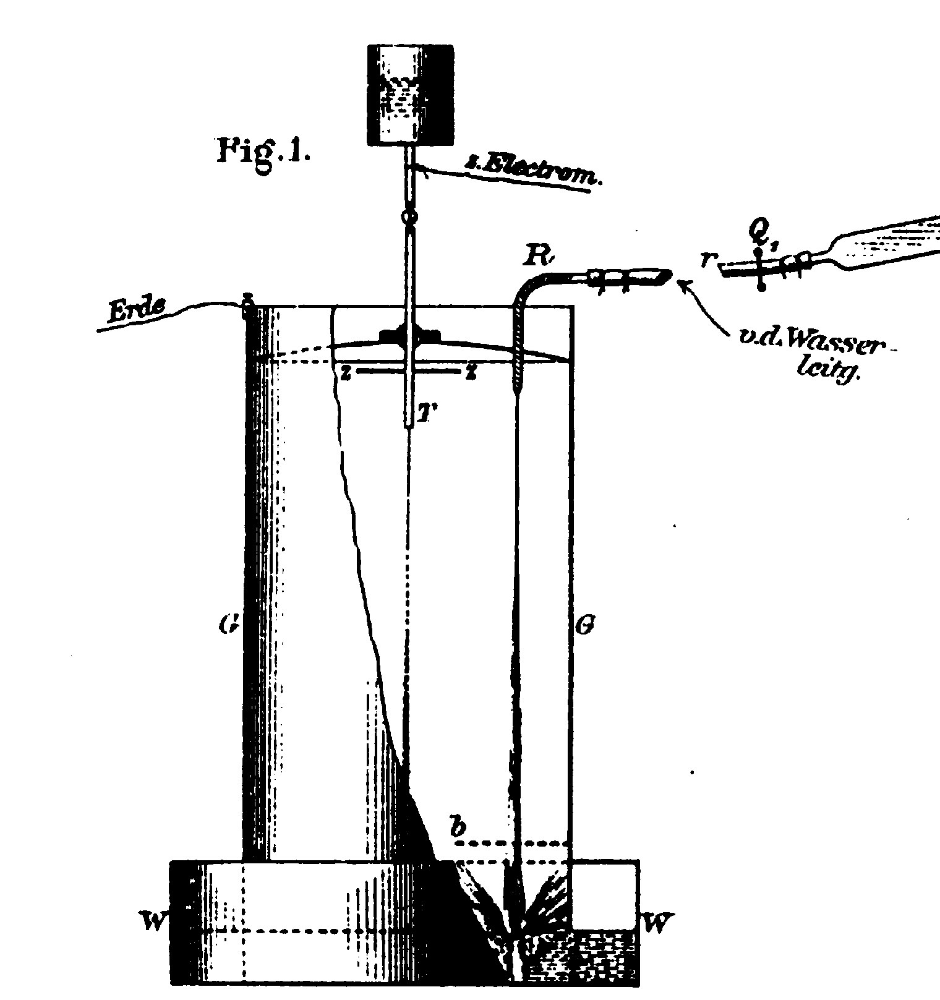
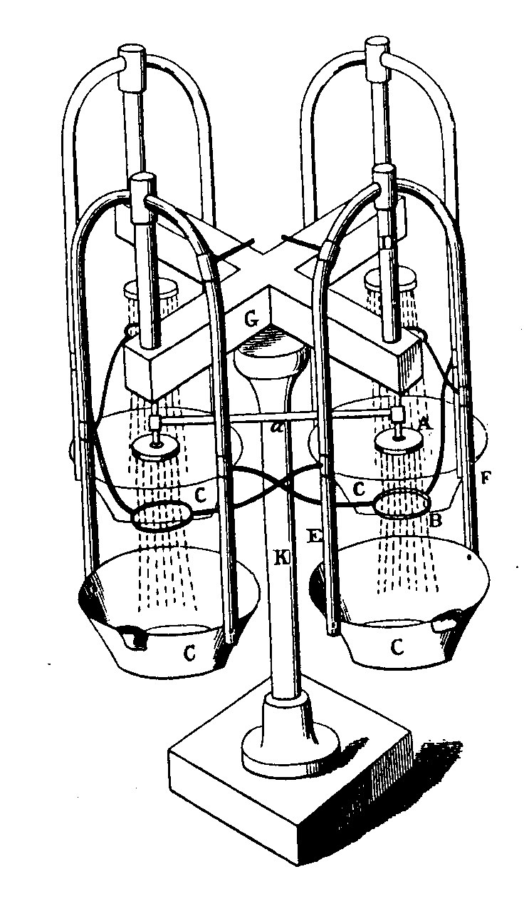
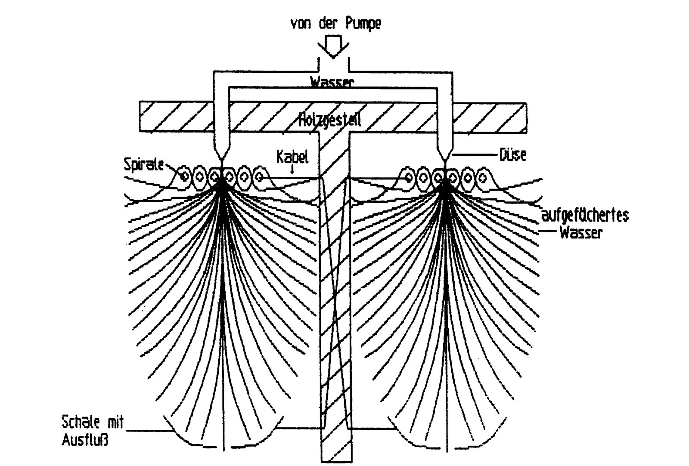
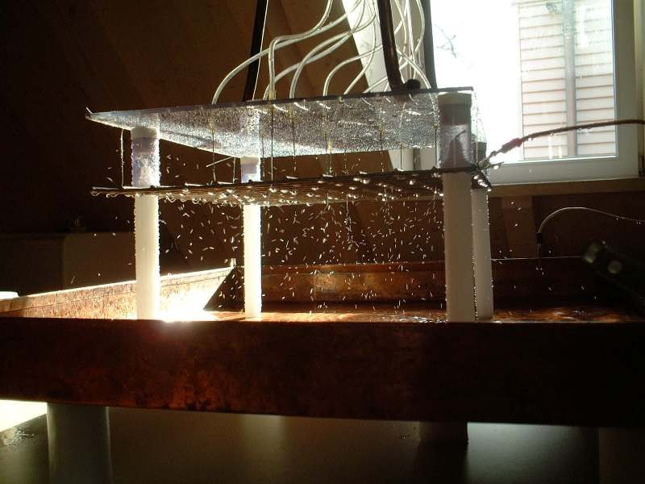
上面这一串实验回答的是「水能不能生电」。资料包里还有另一条并行的路线，回答的是「这些电能不能用来循环净水」——它借用的不是交错落水，而是「三个工作体绕中轴轮流变化」这个结构，资料中称之为「三桥开尔文」。它与本节原理同源，只是把「取出电荷」换成了「让水自己走起来」。
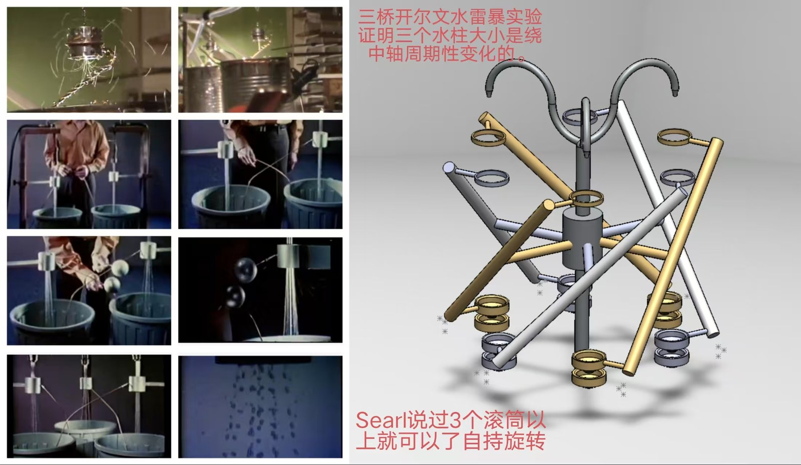
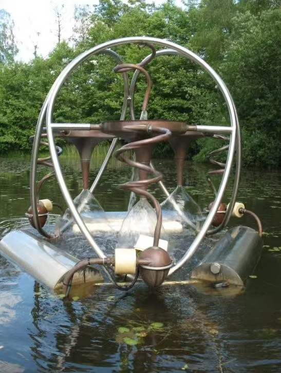
舒伯格本人没有做静电计，但他把这件事推到了另一个方向——他关心的不是"取出电"，而是水在被撕裂与再结合的过程中自身发生了什么。讲义最后九页全是他从《Implosion》各期摘出的原话，这里列出可核对的数字：
| 出处 | 舒伯格原话要点 |
|---|---|
| Implosion 120 | 一滴水凭自重自由落下、硬着落，就足以在静电计上测到约 2,000–4,000 V 的"死亡电流"；把喷嘴压力提到约 2–3 atü，可升到 15,000 V。他加了一句关键的警告：最危险的是离心力——压力会随半径增大而升高。 |
| Implosion 113 | 把落下的水滴引入铅管以制动其辐射，再把束流送入接近真空的空间加速，会出现"暗红色、强烈脉动的光"。经莱顿瓶把这种束流导入可燃液体或气体，会得到很高的喷射火焰。 |
| 《Naturnahe Landwirtschaft》 | 一点点铁锈就足以让水彻底"失压"。原本每滴约有 12,000 伏张力、能在真空管中发出强光的水，掺入少量锈之后完全不再放电。这是全篇最容易复现、也最实用的一条。 |
| 1946.08.30 | 把约 0.1 mm（头发粗）的水丝"液压地"导入特定装置，会产生一种此前未知的生物磁性上升／浮升电流：几乎不带安培，速度却远高于普通的"电"压电流。若把一滴水彻底分解，每滴约相当于 2,000,000 V。 |
| Implosion 152 | 把这种电流导入饱和空气的瓶子，瓶子会被瞬间压扁，产物是生化纯水；导入摆、杆、叶片，它们会违背重力瞬间立起，像叶尖露珠一样静止。反复放电并累积到莱顿瓶后导入汽油，可得到更高的喷射火焰。 |
- 有共识的部分："下落／破碎的水会带电"本身是主流教科书内容（瀑布效应、Lenard 效应），Elster & Geitel 与 Lenard 的实验也是正规发表过的物理学史。这一半没有任何争议。
- 没有共识的部分：舒伯格由它推出的"每滴水两百万伏""用导线把水'电报'到任意距离""饮用后可返老还童""原子量约 1.8"等说法，没有任何独立复现。本页按原文列出，并在此明确标注为他本人的主张。
- 量级提醒：2006 年那份学生项目把整套装置的作用明确写成了"驱动一台 1 mW 的静电马达"。请务必让听众记住这个数字——它是一个电荷分离现象，不是一套发电方案。它的价值不在功率，在机理。
- 那它到底重要在哪？回到图 8.1 的介电常数 81：水是自然界效率最高的电荷分离介质，而且只有流动的、被撕裂的水才会分离电荷。如果把这一步接上舒伯格的"水要沿正温度梯度、以向心螺旋运动"的主张，就得到了蛋形活水机最核心的一层设想——让水在正确的几何里反复经历"撕裂—再结合"，从而既分离电荷，又重排分子结构。这条线从本章一直通到第四章的 H₄O 分子笼。
演讲者备注 · 第二章怎么讲
- 本章是全场的思想支点，务必讲透"方向"而非"效率"。建议在白板/大屏上画两条线：一条从中心向外（爆炸），一条从外向内（内爆），全场后面的所有内容都挂在这两条线上。
- 用日常例子锚定 +4℃：为什么冬天湖面结冰而湖底不结冰？为什么"千滚水"不好喝？把物理常数与生活体验绑定，听众才会记住。
- 龙卷风部分可以放慢：它是唯一"免费"的实物教具，任何人都见过。若时间紧张，只讲中心下沉气流 + 外围上升 + 内外反向旋转这三点。
- 2.5 是本章的"数据化"部分，可按时间取舍：时间紧就只讲图 2-6 / 2-7——"两条曲线为什么在 4℃ 相交"。另外三条（比热最低点 +37.5℃、介电 81、104.35° 键角）各留一句带过即可，它们的完整展开在 2.6 与第四章。讲到介电 81 时，顺带说一句原书正文与图注相差 100 倍那处勘误——现场承认"作者自己也会写错数字"，反而增加可信度。
- 2.6 水滴生电是本章留给听众的"钩子"：这一段的作用不是讲发电，而是让听众明白水本身就在和电荷打交道。只讲原理四步，加上 Lenard 那句"负电荷跑掉、正电荷留在水里"即可；舒伯格那几页原话，只念"一滴水落下就有 2000–4000 伏"和"一点铁锈就让水彻底失压"这两句最有力。务必念出"1 mW"这个量级，否则听众会把它误当成能源方案。
- 预告下一章：龙卷风是一个三维涡旋，而舒伯格认为它有一个"凝固下来的形状"——蛋形。更关键的是：如果水必须沿正确的几何运动才能分离电荷、才能趋向 +4℃，那么这个几何本身就值得被解析地写出来。这就是下一章要处理的数学对象。